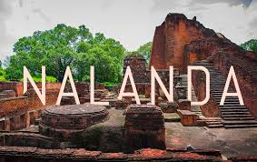
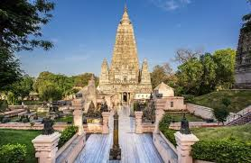
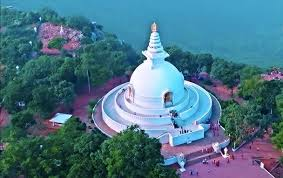
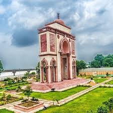
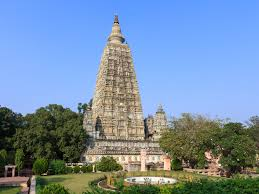

Nalanda

An ancient centre of higher learning (university) established in the 5th century CE. Its ruins are a UNESCO World Heritage Site, offering a glimpse into India's historical educational excellence.
Bodh Gaya

The most sacred site in Buddhism, where Siddhartha Gautama is said to have attained enlightenment under the Bodhi Tree. It features the Mahabodhi Temple, a UNESCO World Heritage Site.
Rajgir

Historically important city revered by Hindus, Buddhists, and Jains. It features Vulture's Peak (Griddhakuta Hill), the World Peace Pagoda, and hot springs.
Patna

The state capital, formerly known as Pataliputra, is one of the world's oldest continuously inhabited places, with sites like the Takht Sri Patna Sahib and the Patna Museum.
Gaya

A holy city for Hindus and Buddhists, situated on the banks of the Falgu River, famous for the Vishnupad Mandir (a riverside temple).